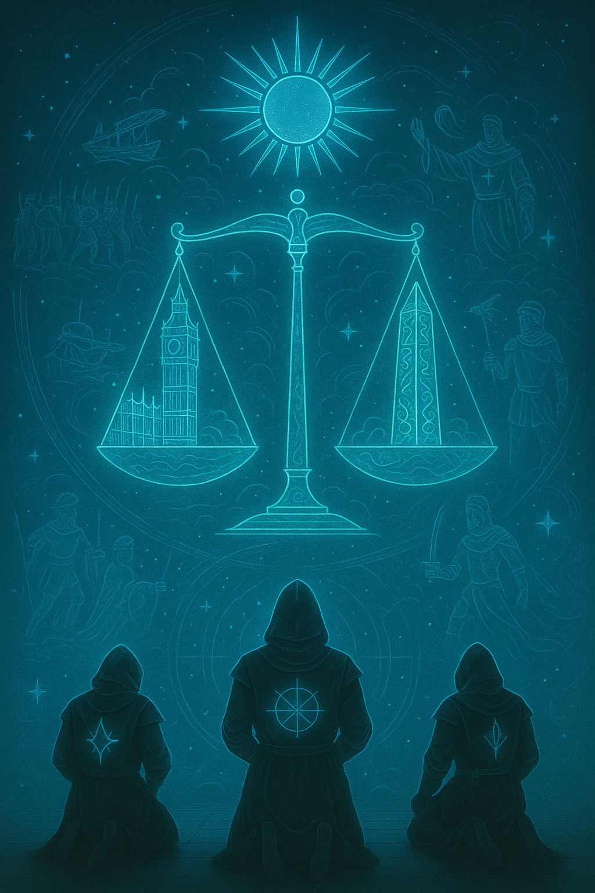
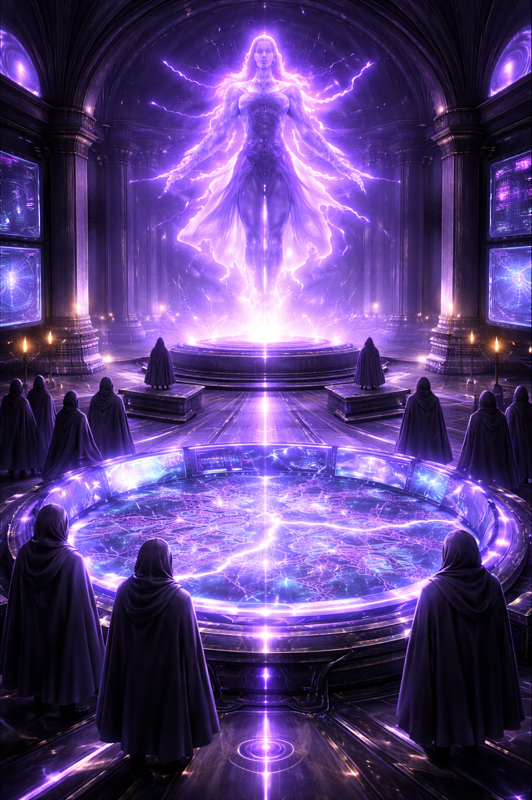
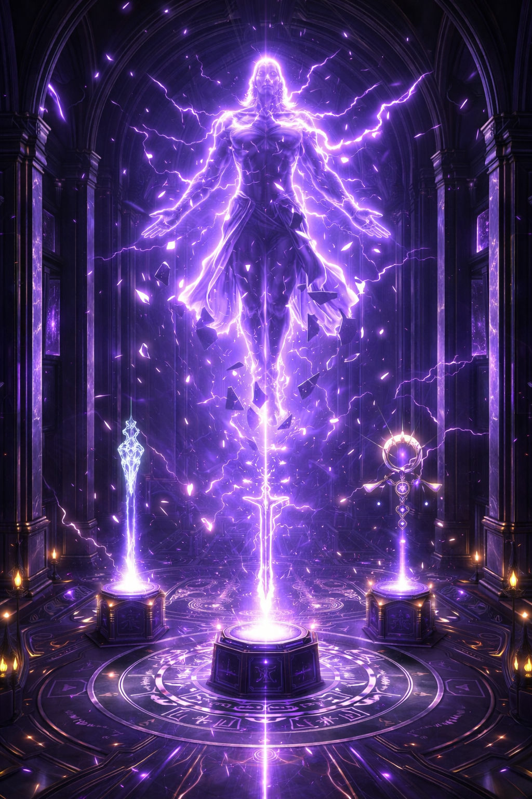

The Order
Summary
Ancient magical society preserving arcane knowledge and enforcing mystical law
Description
The Order stands as one of the oldest continuous magical organizations in existence, its roots stretching back to an age when the distinction between mortal and divine was less clearly drawn. For millennia, they have served as keepers of arcane knowledge, enforcers of magical law, and guardians against those who would abuse supernatural power.
Structure & Hierarchy
The Order operates through a rigid hierarchical structure, with members progressing through ranks based on knowledge, power, and adherence to tradition. Initiates spend years studying under more experienced members, learning not just spells but the philosophy and ethics that govern proper magical use.
At the apex sits the Council of Seven, ancient practitioners whose combined wisdom shapes Order policy. Their identities remain closely guarded secrets, known only to the most senior members. This anonymity protects them from external threats and ensures their decisions are judged on merit rather than personality.
Philosophy
The Order believes magic is a privilege, not a right. They view it as a force that must be carefully controlled and responsibly wielded. To them, reckless use of magic endangers not just the practitioner but reality itself. This conservative philosophy puts them at odds with more progressive factions who see magical knowledge as something to be freely shared.
Operations
The Order maintains hidden sanctuaries throughout the world, with their primary stronghold in London serving as both library and fortress. Their archives contain spell formulas, historical records, and dangerous artifacts collected over centuries. Access to these resources is strictly controlled, available only to those deemed worthy.
They also serve as a supernatural police force of sorts, hunting down rogue practitioners who break magical law. Their enforcers, known as Arbiters, have authority to pass judgment on those who misuse power. This role makes them both respected and feared within the magical community.
Current Tensions
In recent times, The Order finds itself increasingly challenged. The rise of technomagic threatens their traditional power base. Younger practitioners question whether ancient restrictions still serve their intended purpose. And the frequency of supernatural threats forces them to work alongside groups whose methods they find distasteful.
Gallery


